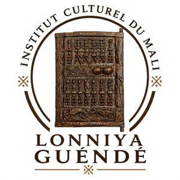

Dans les traditions maliennes, le guèndè est l'espace où l'on bat les céréales afin d'en retirer les impuretés et d'en conserver le grain essentiel. Lonniya Guèndè reprend cette image comme une philosophie de connaissance : le tri intellectuel, la recherche de la vérité, la valorisation des savoirs utiles et leur transmission aux générations futures.
Civilisations, royaumes et empires, sciences africaines anciennes, systèmes politiques et sociaux traditionnels.
Promotion des langues nationales, documentation linguistique, formation aux écritures N'Ko, Adlam, Tifinagh, Ge'ez, Vai, Bamum.
Conservation du patrimoine, archives numériques, conférences culturelles, publications scientifiques.
Formations, concours culturels, initiatives entrepreneuriales, leadership culturel.